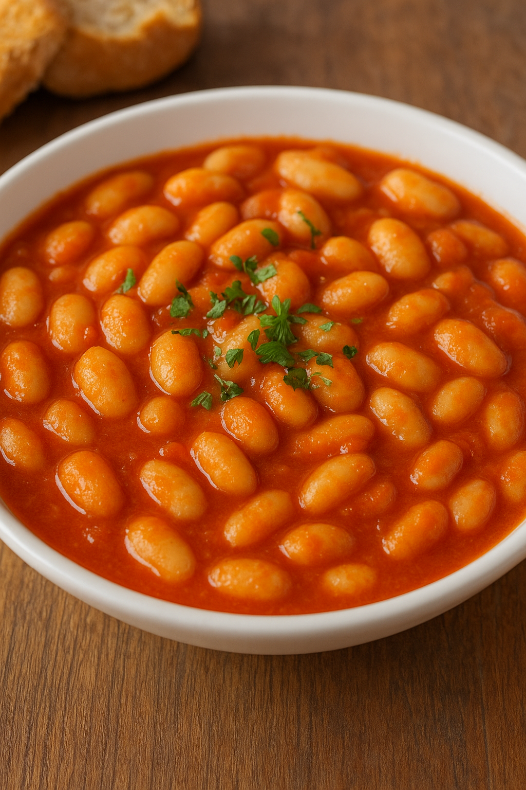

Yemek Tariflerine Hoş Geldiniz
Anasayfa
Çorbalar
Ana Yemekler
Salatalar
Mezeler

Kuru Fasülye
Malzemeler
- 2 su bardağı kuru fasulye
- 1 adet büyük kuru soğan
- 2 yemek kaşığı sıvı yağ (veya tereyağı)
- 1 yemek kaşığı domates salçası
- 1 tatlı kaşığı biber salçası (isteğe bağlı)
- 200 gr kuşbaşı et veya sucuk (isteğe bağlı)
- Tuz
- Karabiber
- Pul biber (isteğe bağlı)
Yapılışı
-
Fasulyeleri hazırlama:
Fasulyeleri bir gece önceden suya koyun ve sabaha kadar bekletin. (Bekletmezseniz haşlama süresini uzatmanız
gerekir.)
-
Soğanı kavurma:
Tencereye yağı alın, ince doğranmış soğanı ekleyip pembeleşinceye kadar kavurun.
-
Salça ekleme:
Domates ve biber salçasını ekleyip 1-2 dakika kokusu çıkana kadar kavurun.
-
Etli veya etsiz hazırlama:
- Etli yapacaksanız kuşbaşı eti önceden kavurup ekleyin.
- Sucuk kullanacaksanız dilimleyip salçayla birlikte ekleyebilirsiniz.
- Etsiz yapıyorsanız direkt fasulyeyi ekleyebilirsiniz.
-
Fasulyeyi pişirme:
Süzülmüş fasulyeleri ekleyin, ardından sıcak suyu dökün. Tuz ve baharatlarını katın.
-
Kısık ateşte pişirme:
Orta ateşte kaynadıktan sonra kısık ateşte yaklaşık 40-50 dakika fasulyeler yumuşayana kadar pişirin.
Servis: Sıcak sıcak pilav ve turşuyla servis edebilirsiniz. 🍚🥒